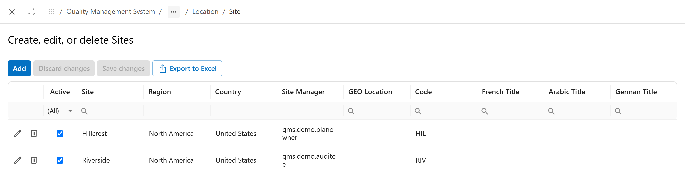

All settings are under Apps > Quality Management System > QMS Settings (admin).
The audit team
Cedar Valley has one internal audit team. Marco leads it; Sam and Lina are its auditors.
Audit Settings > Teams opens the Team List.
 1234
1234- Add creates a team.
- Team Name, picked on each audit program.
- Team Leader approves the team's programs and is the only one who can plan them.
- Members become the auditors you can pick on an audit.
The sites
Cedar Valley has two plants. Every program, audit, CAPA and quality event names the site it belongs to.
General Settings > Location holds Region, Country and Site, in that order. Create the region and country first.

123- Site, with its region and country.
- Site Manager.
- Code. It becomes the start of the CAPA ID when a CAPA has one site, as in RIV-CAPA-AFI-00193.
The lists people pick from
Each dropdown on the forms reads a list an administrator keeps. Fill them before the first user meets an empty dropdown.
| Settings group | List | Used on |
|---|---|---|
| Audit Settings | Audit Types, Audit Methods, Related To | audit programs |
| Audit Settings | Test Methods | evidence for tests |
| General Settings | Category | programs, CAPAs, action items |
| General Settings | Frequency | programs, effectiveness plans, action items |
| General Settings | Compliance Program | programs and action items |
| General Settings | Language | the Content Language of a program |
| General Settings | RCA Reason & Description | the root cause analysis |
| CAPA Settings | CAPA Related To | CAPAs |
| Quality Event Settings | reasons, sources and related-to lists | quality events |
A Frequency entry carries a number of days. The effectiveness plan uses it to space its checks, so a frequency of 30 days repeats the check every month.
Things with no screen
Two things the product expects are set up outside the QMS settings.
- A role called exactly Director of Quality. New action items take its members as the default Action Completion Reviewer. Without the role, that field starts empty and someone must pick a reviewer every time.
- The connection to the process repository and its archive folders, set in General Settings > EPC Settings. Chapter 16 explains what they are for. Leave them empty and nothing is archived.
Who can open what
Anyone can start an audit program or a CAPA. The people who act on it are the ones named on it.
The menu forms are open to all users. Roles decide who gets a task, not who sees a menu. Restrict access by changing the permissions on the forms, if your company needs it.
What runs on its own
Some steps start without anyone clicking. That is why a planned audit appears in To Do on its start date.
| How often | What happens |
|---|---|
| every 5 minutes | a planned audit whose start date has come moves to Schedule Audit; evidence rounds start, and their status updates |
| every hour | reminders go out before an audit; confirmed audits start on their date |
| every day | effectiveness plans create their next check; action item owners get reminders on the due date |
None of these timers waits for working hours.
Common mistakes
- Going live with empty lists. Users find empty dropdowns and type workarounds into text fields.
- A site without a code. The CAPA ID then has no site prefix.
- No Director of Quality role. Every action item needs a reviewer picked by hand.
- A team without members. The audit owner cannot pick any auditors.